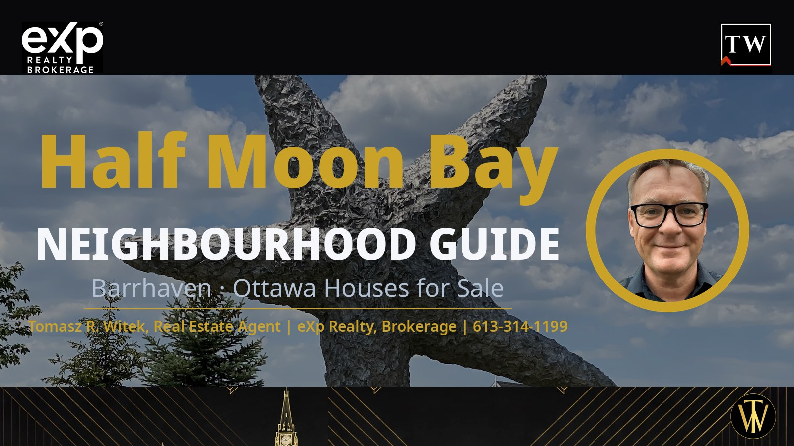
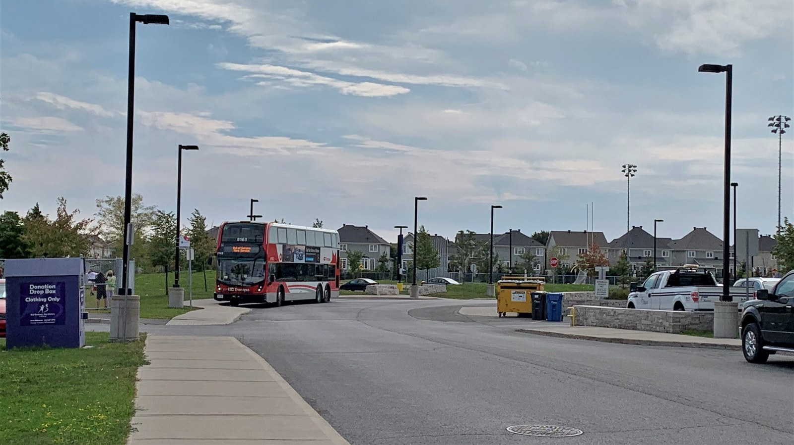
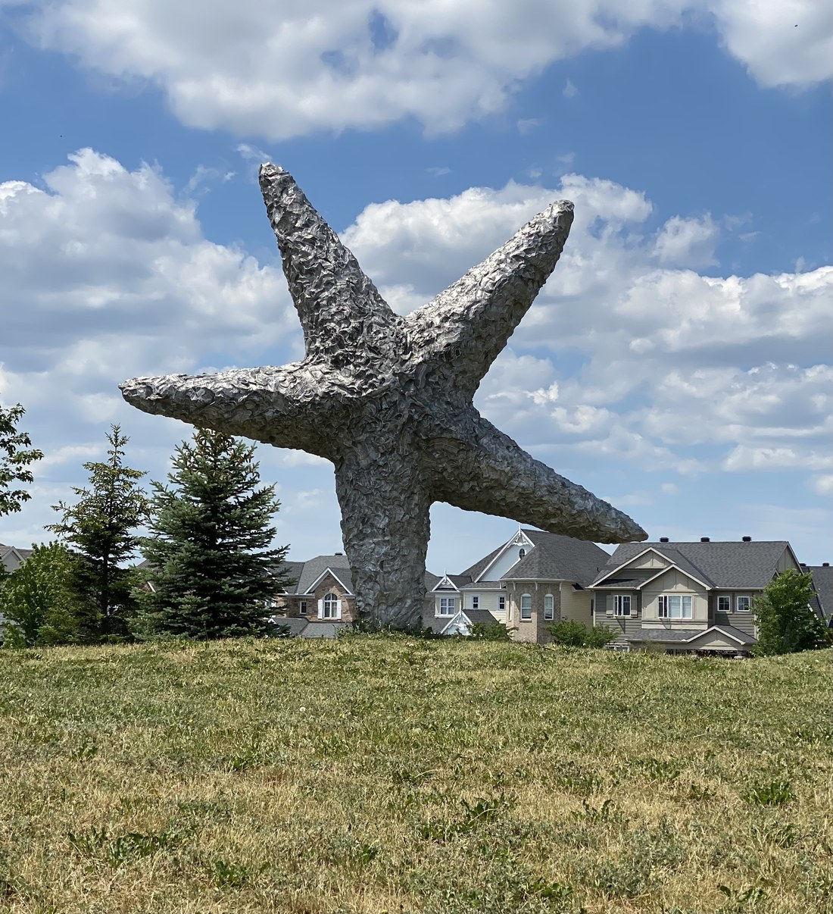
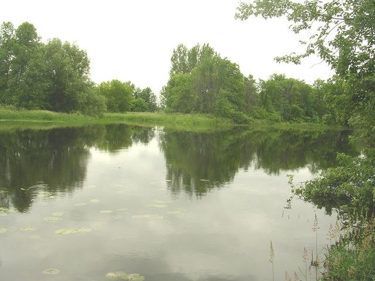

Your complete guide to houses for sale in Half Moon Bay (7711), a Barrhaven neighbourhood in Ottawa — real estate advice for buying and selling in the Half Moon Bay neighbourhood, with live listings and prices updated daily.
This guide to the Half Moon Bay (7711) neighbourhood starts with the real numbers — the schools, parks and price bands that matter — because streets here trade on the Jock River edge, an in-community school in every board, and Barrhaven's deepest shelf of new-build homes.
Half Moon Bay is Barrhaven's 2000s-to-today master-planned family pocket (AMP area 7711 — Barrhaven — Half Moon Bay) — centred on Cambrian Road and Greenbank Road and built around crescents, circles and ways wrapped around pocket parks and stormwater ponds, running south from a wooded river edge. It takes in the original Half Moon Bay and Half Moon Bay West, Quinn's Pointe, The Ridge, The Conservancy and The Meadows — built by Mattamy, Minto, Caivan, Tamarack and Claridge, with the Kennedy Lands still to come — and it holds the widest shelf of new-build homes in Barrhaven, from stacked towns to detached singles: all of it 21st-century stock. Its signature river is the Jock River, along its northern edge. And it is the closest of Barrhaven's eleven sub-areas to Highway 416 — with a future interchange planned at Barnsdale Road.
If you are browsing Ottawa houses for sale and want new-build family housing with a school in every board inside the community, its own recreation complex and the deepest shelf of new construction in Barrhaven, this Half Moon Bay neighbourhood guide covers the schools, the parks, the Greenbank realignment and the price context that matter. If you want Barrhaven's newest master-planned community, still growing around the Jock River's south bank — start with the Half Moon Bay Neighbourhood.
Live market snapshot for Half Moon Bay — active listings, average, median, lowest and highest asking prices, refreshed daily. Figures below update every morning.
Live Market Snapshot — Half Moon Bay
Market update: this snapshot reflects the live MLS® feed and is refreshed every morning.
Market read: Half Moon Bay's new-build stock and still-growing phases keep family demand constant — the live snapshot above carries today's count, average and median. The 12-month average-trend chart above will track direction as history builds — check back monthly.
Average days on market. For context, Barrhaven as a whole averages about a month on market; this area's average DOM is computed from the live feed's days-on-market field across the current active listings.
Market read: Half Moon Bay's average and median asking prices sit close together — the sign of a market anchored in its mid-range, where the stacked and back-to-back towns of the newest phases balance the large detached singles of The Conservancy at the top. The 12-month trend tracker above builds that history month by month; every figure here is asking price, not sold price.

Cambrian Station, at Cambrian Road and Greenbank Road. Photo: Mosbo6, CC BY-SA 4.0, via Wikimedia Commons.
Exploring Half Moon Bay & Its Communities
Half Moon Bay is everything in Barrhaven south of the Jock River — the roughly 500-hectare Barrhaven South plan area. The river is its northern edge and green boundary; Barnsdale Road closes it to the south; Borrisokane Road and Highway 416 frame the west; and the existing Greenbank Road runs along the east. Cambrian Road is not a boundary — it is the spine: the Minto Recreation Complex, the community's schools and its first grocery store all sit on or near it, and the sections divide around it — the original community north of Cambrian, Quinn's Pointe south of it.
The named sections: the original Half Moon Bay (the 2007-onward streets around River Mist Road and River Run Avenue, east of the future realigned Greenbank); Half Moon Bay West (toward Borrisokane, in its last phase of development); Quinn's Pointe (Minto, south of Cambrian); The Ridge and The Conservancy (Caivan, in the west between Borrisokane and the realigned Greenbank, with The Conservancy's largest singles backing onto Foster Creek and the Jock River corridor); The Meadows at Half Moon Bay (Tamarack, around Elevation Road and Egret Way in the south-west); and the Kennedy Lands (Minto, still in planning at the community's north-east entry).
The street pattern is pure new-subdivision: crescents, circles and ways wrapped around pocket parks and stormwater ponds, with nature- and sky-themed names throughout — Watercolours Way, Moonglade Crescent, Gibbous, Aphelion Crescent. The land was farmland within living memory: the Barrhaven South Community Design Plan set the framework, and Mattamy launched Half Moon Bay in 2007 as the founding and largest builder. Nearly everything here is 21st-century stock, and the community is still growing into its plan.
Housing Stock & Price Context
A 2000s-to-today master-planned family pocket centred on Cambrian Road and Kilbirnie Drive: Mattamy singles, semis and rows in the original sections (River Mist Road, River Run Avenue), Minto towns, bungalows and singles in Quinn's Pointe (Kilbirnie Drive, Main Halyard Lane), Caivan and Tamarack product in the western sections (Elevation Road, Cappamore Drive), and a denser new layer of stacked and back-to-back towns in the latest phases. Named builders: Mattamy, Minto, Caivan, Tamarack, Claridge. Price context on this page is shown only as asking-price bands from the live freehold set — the live snapshot above and the bands below carry the numbers. Pricing moves with the market — ask me for current comparable sales before you write an offer.
Half Moon Bay Neighbourhood price bands — what the money buys (current asking prices for houses for sale)
Bands below are built from real figures in the live MLS® feed — no invented listings, no padded bands. As the Ottawa REALTOR® buyers trust for straight numbers, I describe only what the live feed actually shows.
Under $650,000: the Half Moon Bay Neighbourhood's townhome shelf — stacked, back-to-back and traditional row homes, two and three storeys, on streets like Nutgrove Avenue, Moonglade Crescent, Symphony Way, Obsidian Street and Deltaview Crescent. This is Barrhaven's deepest entry tier: newer layouts, low-maintenance lots and the first rung of the community's new-build ladder.
$650,000–$750,000: the step up — upper row homes and the first detached singles, on streets like Deltaview Crescent, Aphelion Crescent, Travertine Way and Appalachian Circle: wider plans, double garages, and the move-up layouts buyers cross-shop against the newest Quinn's Pointe phases.
Over $750,000: the detached shelf — two-storey singles up to the $1M-plus top tier on Egret Way, Grand Vista, Logperch Circle and Symphony Way, plus executive row homes. The Conservancy's large singles, some backing onto the Foster Creek and Jock River corridor, anchor the very top.
| Home type | Typical asking range | What it buys |
|---|---|---|
| Townhouse | Under $650K, upper rows to $750K | Stacked, back-to-back and traditional rows — two- and three-storey homes on Nutgrove Avenue, Moonglade Crescent, Symphony Way, Obsidian Street and Deltaview Crescent |
| Semi-detached | $650K–$750K and up | Two-storey semis, concentrated in The Meadows at Half Moon Bay (Elevation Road, Egret Way) |
| Detached | $650K–$750K entry; the main shelf over $750K | Two-storey singles up to the $1M-plus top tier on Egret Way, Grand Vista, Logperch Circle and Symphony Way — the largest Conservancy singles at the top |
Most buyer demand in Half Moon Bay clusters around 3 and 4 bedroom homes for sale in Half Moon Bay — an in-community school in every board, the Minto Recreation Complex on Cambrian Road and Barrhaven's deepest shelf of new-build homes keep the buyer pool deep in every band.
Schools & Catchments
The school bench is this community's signature strength: Half Moon Bay has an in-community school in every board — no other Barrhaven sub-area can say that. The one caution that matters: both English boards split the community by street, so your exact school follows your exact address — always confirm on the board locator before you buy.
English public (OCDSB): two elementaries sit inside the community — Half Moon Bay Public School (3525 River Run Avenue, Kindergarten–Grade 6, English and Early French Immersion) and Wazoson Public School (989 Kilbirnie Drive), which opened in January 2024 with dual-track English and Early French Immersion and today runs Kindergarten to Grade 6; its name means “bird's nest” in Algonquin/Anishinaabe, and an attached child-care centre (River Mist Early Learning Centre) shares the site. The split between the two runs by street, roughly along Cambrian Road and the realigned Greenbank. From either school, students feed Cedarview Middle School (2760 Cedarview Road, Grades 7–8) and then John McCrae Secondary School (103 Malvern Drive, Grades 9–12), both just north of the river.
English Catholic (OCSB): a three-way elementary split, all inside the community — St. Benedict School (2525 River Mist Road), St. Cecilia School (3490 Cambrian Road) and St. Juan Diego School (135 Main Halyard Lane, with French Immersion, opened 2024) — feeding St. Joseph High School (3333 Greenbank Road, Grades 7–12) north of the river.
French Catholic (CECCE): École élémentaire catholique Sainte-Kateri (2450 River Mist Road) sits inside the community on the same corridor as St. Benedict and Half Moon Bay Public School, feeding École secondaire catholique Pierre-Savard (1110 Longfields Drive, Grades 7–12).
French public (CEPEO): École élémentaire publique Des Visionnaires (110 Robin Easey Avenue, 475 student places with an attached daycare centre) is open inside the community. The expected secondary destination is École secondaire publique Pierre-de-Blois (1310 Chapman Mills Drive, Grades 7–12) — the board publishes no feeder statement for it, so confirm through the board's sector tool.
Coming: a funded OCDSB Half Moon Bay Secondary School at 3853 Cambrian Road — Grades 7–12 and 1,474 student spaces, with 40 classrooms, 8 science labs, 6 art and music rooms, 5 technology and vocational rooms, 4 special education spaces and a learning commons, backed by $77.7 million in provincial funding. The board's capital-projects page lists a scheduled opening date of September 2029. When it opens, it will give Half Moon Bay something no Barrhaven community has: a public high school of its own, inside its own boundaries.
Parks, Trails & Recreation
The anchor is inside the community: the Minto Recreation Complex — Barrhaven (3500 Cambrian Road, at the Cambrian–Greenbank circle). The City's facility pages list a six-lane 25 m lap pool with 1 m and 3 m diving boards, a separate shallow pool, a leisure pool with a lazy river, the WIBIT inflatable obstacle course and a café; two NHL-sized rinks; an outdoor artificial turf field built to CFL and FIFA standards (Quinn's Pointe Field); an indoor walking track; a gymnasium; and weight and cardio rooms — with a park and play structures next door.
Half Moon Bay Park (3525 Cambrian Road) carries the community's splash pad and its signature landmark: the “Falling Star” sculpture (Don Maynard, 2013), a 13-foot cast-aluminium star balanced on one of its five points atop the toboggan hill — at night, light shimmers through hundreds of small holes pierced in its surface. Guinness Park (120 Ramsgrange Street) adds a second City-confirmed splash pad. Around them runs a deep bench of pocket parks: Black Raven Park (675 Dundonald Drive), Cappamore Park (730 Cappamore Drive), Celestial Park (140 Celestial Grove), Flagstaff Park (601 Flagstaff Drive), Freshwater Parkette (3025 Freshwater Way), Regatta Park (150 Pennant Avenue), River Mist Park (2520 River Mist Road), River Run Park (3490 River Run Avenue), Tucana Park (325 Tucana Way) and Watercolours Park (2400 Watercolours Way), plus Half Moon Bay District Park (2565 Half Moon Bay Road), wrapped around a stormwater pond draining toward the Jock River.

The “Falling Star” sculpture (Don Maynard, 2013) at Half Moon Bay Park. Photo: Cbuske46, CC BY-SA 4.0, via Wikimedia Commons.
One more is on the way: Obsidian Park (proposed name), fronting Obsidian Street in the Mattamy section, is a new park in design — the City's consultation has closed with Option 2 selected, a wood-fibre play area with hexagonal climbing equipment. It is planned, not yet built. And the Jock River itself is the community's northern green edge: a protected open-space corridor along the south bank, with development held back from the water. No named shoreline trail inside the community has been established — the guide claims the river edge, honestly, and the future Greenbank crossing below adds the first formal river access point.
Commute, Transit & the Greenbank Realignment
Today's transit runs on two routes. Route 75 (Frequent) is the principal route inside Half Moon Bay — it runs the Cambrian and Kilbirnie interior on River Mist Road, Cappamore Drive and Greenbank Road, extended south of Kilbirnie Drive, and connects to O-Train Line 1 at Tunney's Pasture. Route 275 (Connexion) is the peak-period express from the Half Moon Bay Road and Perseus Avenue terminus to Tunney's Pasture. (Older route numbers you may still see in listings — 171 and 175 — no longer run.) The nearest Park & Ride lots sit north of the river, named as nearest: Fallowfield (1,648 spaces, with the VIA Rail station), Strandherd (405 spaces) and Nepean Woods (278 spaces). No LRT or Line 2 station is in Barrhaven — Line 2's nearest station is Limebank, and the Barrhaven LRT plan terminates at Barrhaven Town Centre, north of the river. Half Moon Bay's own rapid-transit future is bus rapid transit, below.
The Greenbank Road realignment is the biggest infrastructure story in Barrhaven South: a new four-lane arterial with a segregated two-lane bus rapid transit corridor in the median, sidewalks, cycling facilities and protected intersections throughout, running from Chapman Mills Drive south to Barnsdale Road, designed by Stantec Consulting Inc. The phasing matters, and the guide states it plainly: Phase 1 (Riverboat Heights to Cambrian Road, and 200 metres south of it) builds the four-lane arterial first, with a temporary grass median where the BRT lanes will go — the median BRT lanes themselves come in a later phase, once external funding is secured. Planned stations serving the community are Cambrian, Dundonald and Kilbirnie, with a Park & Ride at Barnsdale Road (the City has bought 2.6 hectares at 3882 Barnsdale Road for it), joining Barrhaven Town Centre, Darjeeling, Riverboat and River Run to the north. A later phase (the City's Phase 2a) adds a new six-lane bridge over the Jock River — four arterial lanes plus the two median BRT lanes — described by the City as being expedited and proceeding when funding is available; no date is published, and none is promised here. The existing Greenbank bridge segment over the Jock converts to a multi-use pathway once the new crossing is built.
West-side road access is the quiet advantage: Half Moon Bay is the closest of Barrhaven's eleven sub-areas to Highway 416, reached today at Fallowfield Road, with Barnsdale Road crossing the highway on an overpass without ramps. A full Barnsdale Road interchange is designed and planned — the MTO's detail design and Class EA study runs from spring 2026 to spring 2027 — but construction has no set date. Ask me about the fastest routes from a specific street.

The Jock River, along the community's northern edge. Photo: Earl Andrew, public domain, via Wikimedia Commons.
Shopping, Groceries & Restaurants
Retail now exists inside the community — the assumption that Half Moon Bay has no shops of its own is out of date. Food Basics is open at 3831 Cambrian Road: 43,000 square feet with a full-service pharmacy and about 125 jobs (Metro Inc.), at the designated community core where Cambrian meets the realigned Greenbank — Barrhaven South's first major retail tenant. Two more nodes are planned, and the guide names them as planned only: a plaza at 3850 Cambrian Road (four low-rise commercial units in City documents; reported tenant names are not retailer-confirmed, so they are not printed here) and the node at 652 Flagstaff Drive in Half Moon Bay West (two one-storey commercial buildings in the City's site-plan summary). The big weekly runs still go north across the Jock, minutes away: Chapman Mills Marketplace (Loblaws, Walmart Supercentre, Cineplex, Winners), Barrhaven Town Centre (Your Independent Grocer, Dollarama, Home Depot, Shoppers Drug Mart) and Strandherd Crossing (Metro, GoodLife Fitness). The full Barrhaven directory lives on the parent Barrhaven page.
New construction homes in Half Moon Bay
Who's building where — Half Moon Bay Neighbourhood
| Community | Builder | Product | Status |
|---|---|---|---|
| Half Moon Bay — the original community, Half Moon Bay West and Half Moon Bay South | Mattamy Homes | Singles, townhomes, stacked townhome condos | Actively selling — the founding builder's current release is stacked townhomes (The Aster II, The Willow II) |
| Quinn's Pointe — south of Cambrian Road, between Borrisokane Road and Greenbank Road | Minto | Townhomes, bungalows, two-storey singles | Phase 4 sold out; Phase 5 registering |
| Kennedy Lands — Greenbank Road, at the community's north-east entry | Minto | 30′/36′/43′ singles, street towns, back-to-back towns | In planning — filed concept only; unit counts are a concept, not an approval |
| The Ridge — south of the Jock River, between Borrisokane Road and the realigned Greenbank | Caivan | Townhomes (incl. the 24′ collection with optional secondary suites), two-storey singles, bungalows | Actively selling |
| The Conservancy — the Borrisokane and Foster Creek side, backing onto the creek and river corridor | Caivan | Stacked towns, townhomes, single-detached (incl. large river-backing lots) | Actively selling |
| The Meadows at Half Moon Bay — Elevation Road and Egret Way, in the south-west | Tamarack | Townhomes, two-storey semis, bungalow singles, two-storey singles | Actively selling — towns complete; singles still building |
| Watter's Pointe — Hosta Drive at Greenbank Road, along the Jock River | Claridge | Townhomes only — 169 homes | Limited release |
Caivan, on video: Caivan builds on the community's west side — The Ridge south of the Jock, and The Conservancy, where the largest singles back onto the creek and river corridor. Walk through Caivan's Newbury model with me — the 42-foot collection sold at The Conservancy and The Ridge:
And the 42-foot singles breakdown, in under a minute:
Tamarack, on video: Tamarack's Meadows, at Elevation Road and Egret Way, is the community's other long-running build — towns, semis and singles on the south-west side. Here is Tamarack's Harmony model:
Builder prices, discounts, rebates, layouts, available lots and upcoming releases change constantly — call or text 613-314-1199 and I will send you the current Half Moon Bay Neighbourhood new-builder package.
This Half Moon Bay neighbourhood guide carries live Half Moon Bay listings — Half Moon Bay houses for sale and Half Moon Bay homes for sale — with map search, new-listing alerts, and saved searches. View all Half Moon Bay listings on a live map. If you want new Half Moon Bay listings the moment they hit the market, call or text me and I will set up a private search for you. Searching for a 'Half Moon Bay neighborhood guide' — or just 'Half Moon Bay neighborhood' — with the American spelling? Same place — 'neighbourhood' is the Canadian spelling.
Open houses this weekend in Half Moon Bay Neighbourhood: the live map above flags every scheduled open house in the feed. Want the full weekend list plus private showings? Call or text 613-314-1199.
Comparing nearby Barrhaven pockets: buyers cross-shopping Half Moon Bay usually compare Stonebridge (east across Greenbank Road, built around the golf course), Strandherd (north across the Jock River, with its own Transitway station and Park & Ride) and Barrhaven East (the established streets north of the river, up toward Chapman Mills).
Explore all 11 Barrhaven neighbourhoods
This Half Moon Bay neighbourhood guide is one of eleven Barrhaven neighbourhood guides on this site. Start with the Barrhaven Neighbourhood Guide, Ottawa for the full Barrhaven overview, live listings map and market snapshot, then explore each sub-area: Pheasant Run, Knollsbrook, Cedargrove and Fraserdale, Heritage Park, On the Green, Longfields, Hearts Desire, Stonebridge, Strandherd, Barrhaven East, Half Moon Bay.
The honest pros and cons of Half Moon Bay Neighbourhood
Best parts: a school in every board inside the community, plus a funded public secondary school coming; Barrhaven's deepest shelf of new-build homes; the Minto Recreation Complex on Cambrian Road; and the Jock River along the north edge. Be aware of: today's transit is buses to Line 1 — the median BRT on the realigned Greenbank is a later, funding-dependent phase; in-community retail is young (one grocery anchor open, the other nodes still planned); and the realignment will work its way down the community's spine in phases.
Who should move to Half Moon Bay Neighbourhood?
Families — schools in every board inside the community and the recreation complex on Cambrian Road. New-build buyers — the widest choice of new construction in Barrhaven, from stacked towns to river-backing singles. First-time buyers — a deep townhome tier that still prices under $650,000. Move-up buyers — detached singles on the river-side streets without leaving Barrhaven.
Frequently Asked Questions
01 — Pricing & Market
What is the average home price in Half Moon Bay?
The snapshot near the top of this page shows today's average asking price, median and range for Half Moon Bay Neighbourhood, refreshed every morning from the live MLS® feed. The average and median sit close together — a market anchored in its mid-range. Remember these are asking prices, not sold prices; ask me for current comparable sales before you offer.
How many homes are for sale in Half Moon Bay Neighbourhood right now?
Inventory changes daily — the live snapshot and map on this page always show the current set, counted from the live MLS® feed, and I can set up a private search that alerts you the moment a new Half Moon Bay Neighbourhood listing hits the market.
What do homes under $650,000 buy in Half Moon Bay Neighbourhood?
Under $650,000 buys the Half Moon Bay Neighbourhood's entry tier: stacked and back-to-back townhomes and traditional row homes (roughly $425,000 to $650,000 across the townhome shelf) — including the newest phases on Nutgrove Avenue, Moonglade Crescent, Symphony Way and Obsidian Street. Many are near-new layouts with modern finishes and low-maintenance lots.
Is Half Moon Bay Neighbourhood in a buyer's or seller's market?
Asking prices alone can't call it — a true buyer's-or-seller's read needs sold-to-list ratios and days on market from the MLS® feed, not just active listings. What I can say: buyers have a healthy selection to choose from in the Half Moon Bay Neighbourhood — the live snapshot on this page shows today's count. Text 613-314-1199 and I'll run the current absorption numbers for your price band.
What types of homes are in Half Moon Bay?
21st-century stock throughout: single-detached homes, semi-detached homes in The Meadows, traditional townhomes, and a growing denser layer of stacked and back-to-back townhomes in the newest phases — all of it built from 2007 onward, in a master plan still being built out.
Is Half Moon Bay a good place to buy a home?
For buyers who want new-build housing with a school in every board inside the community, its own recreation complex and the Jock River at its edge — yes, with an entry tier of townhomes still starting under $650,000. Get current comparable sales before offering.
02 — Buying Process
Want the current new-builder package for Half Moon Bay?
Builder prices, discounts, rebates, layouts, available lots, community master plans and upcoming releases change constantly — contact me through the contact form on this page, by email, or by text at 613-314-1199 and I will send you the current package for this area.
Are new homes being built in Half Moon Bay?
Yes — Mattamy is selling stacked townhomes in its current Half Moon Bay release, Caivan is actively selling at The Ridge and The Conservancy, Tamarack is still building singles at The Meadows, Minto's Quinn's Pointe Phase 5 is registering, and the Kennedy Lands are in planning at the community's north-east entry.
New build or resale — which is better for a first-time buyer?
It depends on the home and the budget. New homes carry new-home rebates that resale homes don't — the federal first-time home buyers' GST rebate and Ontario's new-housing rebates apply to new construction only. Resale first-time buyers can still claim an Ontario land transfer tax refund of up to $4,000, and first-time buyers can use a 30-year amortization on an insured mortgage either way. Text 613-314-1199 and ask me which fits your budget.
03 — Half Moon Bay Neighbourhood
Where is Half Moon Bay in Barrhaven?
Half Moon Bay (AMP area 7711 — Barrhaven — Half Moon Bay) is Barrhaven's 2000s-to-today master-planned family pocket south of the Jock River — Cambrian Road is its spine, Barnsdale Road its south edge, Borrisokane Road and Highway 416 its west side and the existing Greenbank Road its east. It takes in the original Half Moon Bay and Half Moon Bay West, Quinn's Pointe, The Ridge, The Conservancy and The Meadows, and it is the closest of Barrhaven's eleven sub-areas to Highway 416, with a future interchange planned at Barnsdale Road.
What schools are near Half Moon Bay, Ottawa?
Seven schools sit inside the community, one in every board: Half Moon Bay Public School (3525 River Run Avenue, OCDSB) and Wazoson Public School (989 Kilbirnie Drive, OCDSB), St. Benedict (2525 River Mist Road, OCSB), St. Cecilia (3490 Cambrian Road, OCSB) and St. Juan Diego (135 Main Halyard Lane, OCSB), Sainte-Kateri (2450 River Mist Road, CECCE) and Des Visionnaires (110 Robin Easey Avenue, CEPEO) — and a funded OCDSB secondary school is coming to 3853 Cambrian Road. Both English boards split the community by street, so confirm your exact catchment in the board finders before buying.
Are there condos in 7711?
Yes. Stacked townhome condos — Mattamy's current release and Caivan's stacked series at The Conservancy and The Ridge — are coded to 7711 — Barrhaven — Half Moon Bay. They trade as condos, so the freehold snapshot and price bands on this page do not include them; the condo pages carry them.
What is the Falling Star?
A 13-foot cast-aluminium sculpture by artist Don Maynard (2013), balanced on one of its five points atop the toboggan hill at Half Moon Bay Park on Cambrian Road — at night, light shimmers through hundreds of holes pierced in its surface. It is the neighbourhood's signature landmark, and it fronts this guide's banner.
04 — Straight Answers
What does Tomasz Witek actually do to earn his commission as my buyer's agent?
On every home you consider, I run comparable-market pricing from live MLS® data, coordinate private showings around your schedule, build the offer strategy, negotiate price and conditions, manage inspections, and quarterback your lawyer and mortgage timelines to closing day. On most Ottawa resales you don't pay me directly — the seller's brokerage compensates the buyer's brokerage. Text 613-314-1199 and I'll walk you through it before you commit to anything.
What happens if the Barrhaven home I buy needs major repairs after closing?
Pre-offer homework is the protection. I push for a professional inspection on every resale, structure conditions that protect your deposit, and flag age-specific risks — brand-new construction hides different surprises than a 2007 original. New builds carry Tarion warranty coverage. If an inspection uncovers major issues, we renegotiate the price or walk away with your deposit intact.
Am I locked in if I sign a buyer representation agreement?
The agreement sets the area, timeframe, and how I'm compensated — but the terms are a conversation, not a trap. We'll agree on a fair timeframe and I'll explain the cancellation language line by line before you sign. My business runs on clients who stay because the service earns it, not because paperwork forces it. Questions first? Text 613-314-1199 — no obligation.
Why buy through a REALTOR® instead of finding a home on Kijiji?
Kijiji skips the protections that matter: no verified seller identity, no deposit safeguards, no status certificates on condos, and no professional screening for fraud or title problems. MLS® listings carry listing-brokerage accountability and documented property history, and I verify what you're buying before your money moves. The strongest homes rarely reach Kijiji in the first place.
Thinking about buying in Half Moon Bay? I am Tomasz R. Witek, a REALTOR® and Real Estate Agent with eXp Realty, Brokerage — Exp613, and the Polski agent w Ottawie many Polish-speaking buyers already know. Call or text 613-314-1199 for current listings, comparable sales, and private showings in Half Moon Bay and across Barrhaven. You can also start from my homepage: Ottawa real estate listings. Free · 2 minutes · No spam, ever.
Prefer video? Watch Barrhaven neighbourhood tours on my YouTube channel — market updates and street-level walk-throughs.
Barrhaven's 11 sub-areas compared
| Sub-area | Guide |
|---|---|
| 7701 Pheasant Run | View guide |
| 7702 Knollsbrook | View guide |
| 7703 Cedargrove-Fraserdale | View guide |
| 7704 Heritage Park | View guide |
| 7705 On the Green | View guide |
| 7706 Longfields | View guide |
| 7707 Hearts Desire | View guide |
| 7708 Stonebridge | View listings |
| 7709 Strandherd | View guide |
| 7710 Barrhaven East | View guide |
| 7711 Half Moon Bay | View guide |
What buying in Half Moon Bay Neighbourhood will actually cost you
The sale price is only the start. Your down payment frames everything else: 5% down is the minimum for an insured purchase, and 20% down avoids CMHC insurance altogether. Then budget land transfer tax (Ontario first-time buyers get up to $4,000 back), legal fees around $1,500–$2,000, a home inspection near $500, and moving costs. With less than 20% down, CMHC insurance premiums join the mortgage.
Want your personalized buying-cost breakdown for Half Moon Bay? It’s free, takes 2 minutes, and there’s no spam, ever — call or text 613-314-1199.
Two quick questions — 60 seconds, zero pressure.
1. Are you looking to buy, sell, or both? 2. What’s your timeline — less than a month, 1–3 months, 6+ months, or just browsing? Text your two answers to 613-314-1199 and I’ll reply with the Half Moon Bay listings and numbers that fit. Free · 2 minutes · No spam, ever.
Everything included when you buy with me:
✓ Included — full MLS® search tuned to your criteria, with new Half Moon Bay matches the day they list.
✓ Included — private showings booked around your schedule.
✓ Included — comparable-market pricing analysis before every offer.
✓ Included — offer strategy and negotiation.
✓ Included — inspection, condition and deposit management.
✓ Included — lawyer and mortgage coordination through closing day.
Same Barrhaven buyer demand, same MLS® exposure, same professional marketing — with an agent who negotiates every dollar for you. That’s the difference between browsing listings and actually winning the right home in Half Moon Bay.
What Half Moon Bay buyers and sellers say about working with me
Rated 4.7 out of 5 across 28 Google reviews.
"We were very glad to have Tom as our real estate agent. Tom provided a lot of valuable information and guidance throughout the sale process. Always professional, knowledgeable and attentive to detail. We would highly recommend Tom for your real estate needs!"
— Alexander Orel, Google review
"We recently had the pleasure of having Tomasz as our real estate agent and we couldn't have been more pleased with his service. We are so grateful for his professionalism and efficiency when selling our house. We definitely would recommend him to anyone looking to put their place on the market."
— Bassam Alsattah, Google review
"It was great to work with Tom. I referred to him one of my clients and he did a great service."
— Mon Paw, Google review
Tomasz R. Witek, Real Estate Agent | eXp Realty, Brokerage | 613-314-1199 | Exp613 | Polski agent w Ottawie